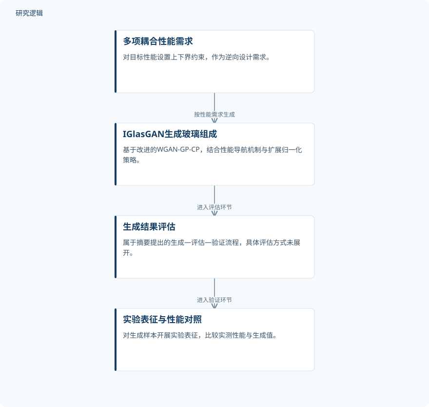

摘要解读
IGlasGAN：基于生成式人工智能的无机玻璃材料逆向设计框架
IGlasGAN: an inverse design framework for inorganic glass materials based on generative artificial intelligence
解读更新 2026-11-10 14:45 · 依据公开摘要整理，未核验全文细节
如何让玻璃配方同时满足多项相互耦合的性能要求？IGlasGAN尝试从目标性能直接生成无机玻璃组成，并用实验检验生成结果，为理解生成式设计如何连接材料需求与实测性能提供了具体案例。
文章目录
玻璃逆向设计，要同时满足多项性能要求
本文关注的不是单项性能优化，而是多目标协同设计：让生成的玻璃组成同时满足多项性能的上下界约束。研究以OLED基板玻璃为应用场景，涉及热膨胀系数（CTE）、杨氏模量（E）、应变点温度（T st）和密度（ρ），核心问题是如何从这些耦合需求出发寻找合适配方。
从性能需求到组成：连接生成、评估与验证
作者提出无机玻璃生成对抗网络IGlasGAN，以改进的WGAN-GP-CP架构为基础，引入性能导航机制和扩展归一化策略，实现从性能要求到玻璃组成的端到端按需设计，并构建“生成—评估—验证”流程。摘要明确了这些方法组成，但未展开其具体实现。
训练数据包含2445个实验样本，其中156个完全满足上述四项性能要求。除OLED基板玻璃设计外，作者还构建了两个从零设计场景，其目标区域与训练数据分布的距离逐步增大，用于进一步检验框架的生成能力。
依据摘要整理的IGlasGAN研究过程


仅概括摘要明确陈述的性能需求、组成生成及评估验证关系，不代表论文原图，也不补充未报告的实验配置。
下载 SVG图示关系说明
实线表示相邻阶段的信息流，虚线表示跨阶段联系或反馈。
多项耦合性能需求 → IGlasGAN生成玻璃组成：按性能需求生成；IGlasGAN生成玻璃组成 → 生成结果评估：进入评估环节；生成结果评估 → 实验表征与性能对照：进入验证环节
生成配方得到实验检验，CTE偏差需单独看待
摘要报告，OLED基板玻璃逆向设计识别出了Y₂O₃含量相对较高的新组成。在三个场景中，作者共对12个生成样本进行了实验表征，实测性能与生成值总体吻合：除CTE外，偏差均在±3.50%以内；CTE的最大偏差为13.03%。
这些结果为框架在所考察目标设置中的适用性提供了实验支持。不过，生成值与实测值接近，不等于所有性能都已满足目标区间。摘要未逐项列出样本的目标边界与达标情况，因此不能仅凭偏差数据推断全部生成样本均满足设计要求。
仅凭摘要，还不能判断比较优势与外推边界
摘要未报告训练与测试划分、实验样本在各场景中的分配、重复测量及不确定性，也未给出与其他方法的定量比较或各模块的消融结果。这些信息需要进一步查阅，不能将摘要未报告理解为论文没有开展相关工作。
目标区域逐渐远离训练分布，是值得关注的验证设置，但摘要未说明距离如何定义、具体组成范围及候选筛选规则。因此，现有材料不足以判断更广泛化学空间中的可靠性，也不能据此确认相对于既有流程的效率提升幅度。
阅读启发：区分生成准确性与约束达标
阅读启发：对生成式设计而言，值得继续追问的是，模型能否提出候选、候选性能能否被准确给出，以及实测后能否同时满足全部约束。进一步阅读本文时，可重点查看性能导航如何处理耦合目标、CTE偏差对应哪些条件，以及远离训练分布的目标如何界定；这些问题比仅看总体吻合更有助于理解方法边界。
以上为本站阅读启发与建议，不是论文已验证的结论。